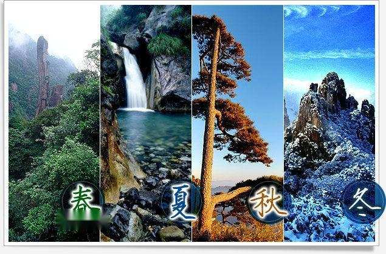
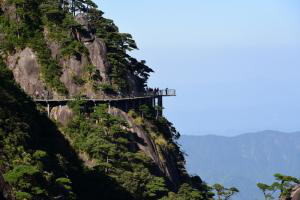
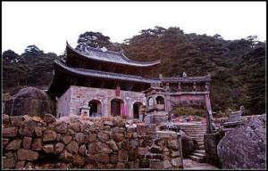
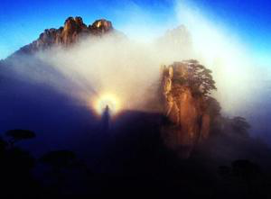
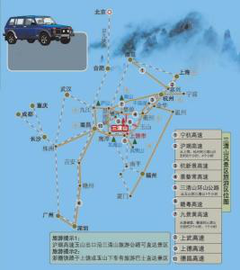

三清山又名少华山、丫山，位于中国江西省上饶市玉山县与德兴市交界处。因玉京、玉虚、玉华三峰宛如道教玉清、上清、太清三位尊神列坐山巅而得名。其中玉京峰为最高，海拔1819.9米，是江西第五高峰和怀玉山脉的最高峰，也是信江的源头。三清山是道教名山，世界自然遗产地、世界地质公园、国家自然遗产、国家地质公园。
三清山主体南北长12.2公里，东西宽6.3公里，平面呈荷叶形，由东南向西北倾斜。位于欧亚板块东南部的扬子古板块与华夏古板块结合带的怀玉山构造快体单元内。地处怀玉山脉腹地，属花岗岩构造侵蚀为主的中山地形。山势是东、南、西三面陡峻，北面稍缓。
世界遗产大会认为：三清山在一个相对较小的区域内展示了独特花岗岩石柱与山峰，丰富的花岗岩造型石与多种植被、远近变化的景观及震撼人心的气候奇观相结合，呈现了引人入胜的自然美。
2018年8月，人民网舆情数据中心发布《2018上半年全国5A级旅游景区综合影响力排行榜TOP50》，三清山旅游景区以58.20的综合影响力排第21名。
三清山雨量丰沛，水量充足，迳流发育，瀑布极多。主要的瀑布有8条，海拔标高一般为500~1000m，主要分布于山体中下部，落差一般10~30m，宽数米至数十米。瀑布大都有“三层结构”特征，即上端有一个“石门”形的出水口，中段为悬岩瀑布主体，底部常有一个美丽的碧潭。瀑布的成因类型大体分为断裂型和侵蚀型两种，如八磜龙潭瀑布、玉帘瀑布、石涧瀑布、冰玉洞瀑布等。
三清山碧潭多与溪流、瀑布相连，澄清碧绿。碧潭面积多数十平方米，深达数米。碧潭的形成是内、外地质营力作用的结果，多出现在地质构造断裂、节理的交汇部位，由地表流水作用不断侵蚀冲刷而形成，如石鼓潭、玉女潭、五色碧玉潭等。
三清山花岗岩体由于发育有大量呈网格状的裂隙，赋存大量的构造裂隙水。加之三清山雨水多，气温较低，水分蒸发慢，森林茂密，构造裂隙水的渗透作用，形成有许多季节性的下降泉。其水清质纯，凛冽冰凉，味甘可口，如古丹井、泸泉井、元泉、禹门泉等。
主要山峰
玉京峰
玉京峰位于三清山的中心，与玉虚、玉华两峰鼎立，海拔1816.9米，为三清山第一高峰，峰顶有大巉岩突出，东侧巉岩上刻有“玉京峰”三个楷书大字。顶端平坦约50平方米，中间有一刻有棋盘的方石，相传太上老君常与众仙在此下棋。两侧巉岩地势空旷，上有升天台。玉京峰东、南、西三巉岩如削。
玉虚峰
玉虚峰位于玉京峰西北，玉华峰以南，海拔1771.6米。南端狭长，地势险要；北头平坦，视野开阔，东南是飞仙谷，北面是黄杨谷。
玉华峰
玉华峰位于玉京峰西北，南与玉虚峰对峙，海拔1752.8米，岩壁上刻有“玉华峰”三字，峭拔秀丽。南头岩石上有一圆井，水色棕红，无源，长年不涸，井旁刻有“丹霞井”三字。西侧隆起一方巨石，上刻“尚书悟仙台”五字，台下有数块大石自然堆起一方天井。峰顶岩石垒垒，地势险要，顶岩石上刻有“红云”两个楷书大字。
蓬莱三峰
蓬莱三峰位于玉京峰南面。蓬莱、方丈、瀛州三峰相联。
锦屏峰
锦屏峰位于玉华峰西，四面悬岩平薄如墙。其顶狭长，怪石岑峨参差，远观如雕镂的花边，立面峻拔，石纹成线。锦屏峰与玉虚、玉华两峰相对，两峰高耸如门，锦屏峰远居其中。锦屏岩缝上长有很多杜鹃、苍松。
天柱峰
天柱峰位于玉虚峰西面，与锦屏峰隔壑相望。
玉笋亭立
三清山(8)玉笋亭立位于天柱峰南面。状如破土而出的竹笋，兀然亭立。顶上有几株虬松盘岩屹立。
双剑峰
双剑峰位于九天锦屏峰西北。两峰相联，合为一峰，峰顶露出两尖，状如两抦宝剑之锋。
老子峰
老子峰位于三清山西北部。峰状如老道，无冠束发，身着宽袖道袍，俯首躬背，精神专注，看经悟道。
天门峰
天门峰位于玉京峰西北，与灵龟峰对峙，两峰中间是少华福地三清宫的要隘天门。峰居三清宫北，海拔1568米，石壁上刻有“天梯”两个大字。峰顶是一巨大花岗岩岩体，光洁平坦，面积有数百平方米。
灵龟峰
灵龟峰位于天门峰东面，海拔1557.8米。峰上一岩状如灵龟而伏。东北飞崖断壁怪石嶙嶙，西南平缓，绿树成荫。峰顶有潘公庙，庙座岩石上镌有“灵龟峰”三个大字。
五门峰
五门峰与冲虚峰隔涧相望，南北对峙。巉岩迭立，险隘关口，古人在关口岩壁上分别刻有“东天门”、“南天门”、“西天门”、“北天门”、“中天门”等楷书大字，故称五门峰。东北岩壁上有琵琶石、母子石。母子石下有众妙千步门，是通往三清宫的第二要隘。穿过千步门，千步岭沿峰直上，全长500余级石阶。
女神峰
女神峰在三清山南侧，面玉京峰，高80余米，近观远眺，皆形似女神，披发齐肩，双手托着两棵青翠古松，正襟端坐，凝神沉思。
玉华峰
玉华峰位于玉京峰西北，南与玉虚峰对峙，海拔1752.8米，岩壁上刻有“玉华峰”三字，峭拔秀丽。南头岩石上有一圆井，水色棕红，无源，长年不涸，井旁刻有“丹霞井”三字。西侧隆起一方巨石，上刻“尚书悟仙台”五字，台下有数块大石自然堆起一方天井。峰顶岩石垒垒，地势险要，顶岩石上刻有“红云”两个楷书大字。
蓬莱三峰
蓬莱三峰位于玉京峰南面。蓬莱、方丈、瀛州三峰相联。
锦屏峰
锦屏峰位于玉华峰西，四面悬岩平薄如墙。其顶狭长，怪石岑峨参差，远观如雕镂的花边，立面峻拔，石纹成线。锦屏峰与玉虚、玉华两峰相对，两峰高耸如门，锦屏峰远居其中。锦屏岩缝上长有很多杜鹃、苍松。
天柱峰
天柱峰位于玉虚峰西面，与锦屏峰隔壑相望。
玉笋亭立

三清山(8)玉笋亭立位于天柱峰南面。状如破土而出的竹笋，兀然亭立。顶上有几株虬松盘岩屹立。
双剑峰
双剑峰位于九天锦屏峰西北。两峰相联，合为一峰，峰顶露出两尖，状如两抦宝剑之锋。
老子峰
老子峰位于三清山西北部。峰状如老道，无冠束发，身着宽袖道袍，俯首躬背，精神专注，看经悟道。
天门峰
天门峰位于玉京峰西北，与灵龟峰对峙，两峰中间是少华福地三清宫的要隘天门。峰居三清宫北，海拔1568米，石壁上刻有“天梯”两个大字。峰顶是一巨大花岗岩岩体，光洁平坦，面积有数百平方米。
文物古迹
遗址：洋堂寺、灵济庙、卓旗石、玉零观、老子宫观、葛仙观、韩无咎故居、丹炉、丹井
观宇：潘公殿、方壕上、九天应元府、纠察府、演教殿、飞仙台、天门、三清宫、方士羽化坛、龙虎殿
石塔：方士羽化坛石塔、风雷塔[11]
注：图册资料来源于三清山景区官网[12]
三清宫

三清宫(4)三清宫位于玉京峰北面，居少华山龟背石上。地势高爽，背南朝北，总体建筑面积518平方米，周围占地2300平方米。正殿三间两进，就山势而建，前低后高，歇山屋顶，梁柱和外墙均为花岗岩结构。正面有三樘大门，中门上挂有青石竖匾，上书“三清福地”四个大字。大门两边刻有“殿开白昼风来扫，门到黄昏云自封”的对联。大殿正中神龛奉有玉清元始天尊、上清灵宝道君、太清太上老君三尊神像，大殿后面是观音堂，中间奉有观音，两侧供有十八罗汉塑像。三清宫为宋王霖始建，明景泰年间王祜在其先祖三清观旧址复建三清宫、两廊、后阁、门楼、牌额及圣像，且延请全真道士詹碧云住山治观。三清山从此被称为道教“无双福地”。
演教殿
位于九龙山北侧，三清山后面的松林里。殿宇4拼3间，顶中间高为悬山式，左右两间低为半边歇山式，全部花岗岩结构。内有石雕神像18尊，中间门坊上刻有“演教殿”三个字，两边石柱上刻有“法本自然演玄源之正教；经由元始阐道德之冲科”的楹联。
纠察府
纠察府位于三清宫东北150米处的塍冈西侧。岩石结构，歇山屋顶，正面额枋上刻有“纠察府”三字，庙里有石刻神像6尊，庙前两旁各有石雕武士像1尊，姿态各异，庙后南侧有巨岩，上刻王永椟书题的“螣冈”两个大字。
龙虎殿
龙虎殿位于海拔1568米的龙首山之巅。建筑面积46平方米，庭院式布局，廊型结构，歇山式屋顶，全由花岗岩石砌造而成。殿前左侧石刻青龙盘踞，右侧石刻白虎雄视。
潘公庙
潘公庙位于海拔1557米的灵龟峰顶上。庙不大，全由花岗岩石叠砌而成，顶部庑殿式，庙宇四方形，简单古朴。九天应元府座落于九华山东南的坡地上，是一座亭式花岗岩小庙。基高一米，中部四面通风，顶上为歇山式，造型粗犷，正面额枋上刻有“九天应元府”五字，庙内供奉有九天应元雷声普化天尊的石雕神像。
玉零观
玉零观位于三清山东北，龙泉桥至风门的中部。观内供奉道教玉枢火府天将。观始建于明景泰年间，后毁于火，清嘉庆十八年重修，又遭火毁，今仅存残碑断柱。
西华塔
西华塔位于汾水至风门中间的庆云岭西华台。塔有七层，上4层为6角密檐实心，下3层为6角密檐空心，檐角翘起，每层由6块条形长石构成6面拱门，空间通透，塔的下部有两层很高的方形基座，基石上刻有“西华台”三字，宝塔全身不用粘结材料，制作粗放，造型独特，实为罕见。
风雷塔
风雷塔位于灵龟峰和龙首山之间的山口悬岩上。塔为5层，密檐6角，全塔身由一整石雕凿而成。塔虽不高，但建在突起的巉岩之上，从下仰视却有居高临下之势。塔原为王祜墓的附属建筑，当时堪舆观点为避山口之风而建，故名“风雷塔”。
步云桥
步云桥位于汾水村头，是登山的第一座古石拱桥。从步云桥开始沿石磴古道登山至三清宫5200米，至玉京峰6900米，步步登高入云，故名。
浮云桥

浮云桥位于千步岭上、百步岭下的冲虚门内，是一座石拱桥。桥的北面是冲虚门，南面是天门，东面是深渊。桥倚绝壁，跨越险崖，面临深谷，高架在海拔1500米的天门要隘上。
流霞桥
流霞桥是一座用石架的小平桥。上方是净衣池，下游是清华池。
登真台
登真台位于玉京峰北下方380米处，海拔1700余米，面积约20平方米。东南深整，峭壁悬崖，西北平缓，有路可上。台上有一岩，上书“登真台”三个正楷大字。台的南沿有两只大脚印，相传为方士羽化留下的足迹，旁刻有“履迹”二字。
尚书悟仙台
尚书悟仙台位于玉华峰顶西南侧，海拔1700米。有一方巨岩突起如台，高约4米，陡险难攀。台上有石雕神像一尊，头部已经风化，峭壁上刻有“尚书悟仙台”五字。相传明朝兵部尚书孙原贞曾游山到此，见台下云涛涌动，雾气飘忽自如，顿悟玄机，心身如入仙境。
飞仙台
飞仙台位于虎头山上，是一座塔式建筑。基部有两层大方脚，上层正面基石刻有“飞仙台”三个楷书大字。中部由4块大角石组成，平面为方形，每面有一小拱门。上部是圆形，比中部略小，亦由4块大石构成，四面拱门，中间空透，仅存半边。顶部为凸圆形，已倒塌。
岩壁浮雕
岩壁浮雕从风门至三清宫沿途有石像24尊，大小相近，高约1米，多为明代文职官员服饰，形态慈祥，工艺粗犷。雷神像一百步门岩壁上雕刻雷神像，尖嘴赤脚，身着盔甲，手执兵器，神态威武，雕工精细。
伏魔上相刻于涵星池堤坝北头岩壁上，神像宽袍大袖，头戴道巾，手握玉笏，垂目端坐。
龙虎雕像一龙虎殿前左右巨岩上，有石雕龙虎。石龙蟠于左，面积约4平方米，突眼扬须，张牙舞爪。石虎踞于右，高宽近1米，长约2米，蹲伏于地，昂首曲尾。
花岗岩圆雕
少华福地有石雕神像、石雕香炉等。三清宫、演教殿、纠察府、龙虎殿、九天应元府、少华福地和天府诸处有石雕神像30余尊。少华福地石坊前的左右神将，三清宫门坊神龛内的灵官、魁神，均系花岗岩雕成，高达1米多，雕工精细。石香炉高1米余，炉腿系兽头花纹，工艺精湛，古朴大方。詹碧云藏竹之所的平台栏干，设计朴实，雕工粗犷，栏于石柱上的石狮。
峭壁字刻
三清山壁刻，主要是峰名、景物和地名，共63处，如白石井、香葩笼、王家岩、登汉桥、挂冠岭、玉京峰、尚书悟仙台等字均刻揩书，笔力刚劲；雕工精湛，传字之神韵。
景区景点
三清山佛光三清山有十大分景区：
1．南清园景区；2、三清宫景区；3、玉京峰景区；
4．西海岸景区；5、东海岸景区（阳光海岸景区）；6、万寿园景区；
7．玉灵观景区；8、西华台景区；9、石鼓岭景区；10、三洞口景区。
十大分景区归三清山风景名胜区管理委员会统一管理，距离东钱湖有五公里。
十大景观
东方女神、巨蟒出山、猴王献宝、玉女开怀、老道拜月、观音赏曲位于南天门、葛洪献丹、神龙戏松、三龙出海、蒲牢鸣天（原名海狮吞月）。
特色景点
三清奇松、奇峰怪石、云海、杜鹃、高空栈道、日出晚霞、佛光[13]。
交通信息

三清山自驾车线路
自驾游路线（1）江浙沪广东一带
沪昆高速玉山出口下，约1公里，第一个红绿灯左拐，进了320国道直走3.5公里在左拐，进入三清山环山公路又直走45公里就到三清山景区了，左拐是去三清山南部外双溪索道，右拐是去东部金沙索道（婺源方向），一般是江浙沪广东一带的游客。
（2）武汉、九江、景德镇、武夷山、婺源、黄山
一般是上景婺常高速—德婺高速，从婺源的第一个高速路口上，到小关下高速，然后经小关收费站入三清山环山公路，大约再开个40分钟就能到达三清山金沙索道站，直走约30分钟到三清山南部外双溪索道。
第二条路是不上高速的，走国道，到直接到小关，再进到环山公路。
自助公共交通
自助交通中转站一般是首选在玉山县下，次选上饶市下。
（1）玉山县
坐火车到玉山或乘高铁至玉山南站，然后坐公交车、电动三轮子或出租车到玉山县汽车站，电动三轮子较多，约5元/人，半夜也有车的，稍贵，可以讲价，到汽车站约5-8分钟。去三清山有两种班车，分别是去东部金沙和南部外双溪的，票价16元/人，根据选择乘坐东部和南部索道，两边都可以上山。间隔40分钟一趟，需要一个小时到达，停靠地点都在索道附近。最早6:10，去南部班车最晚5:00，去东部的班车最晚是下午6:10，注：季节不同会有所调整。不过还有一趟上饶——三清山东部（金沙）—婺源的车子，上饶17:20出发，18:00到玉山汽车站门口会停。
（2）上饶市火车站或汽车站
因为上饶市与全国火车车次较多，缺点就是上饶到三清山的汽车班次较少，上饶市带湖路汽车站到三清山南部索道发车时间（7:30，13:30）。去东部索道只有17：20的一班车。
最常见的走法：从上饶市火车站下车，坐公交车1元或摩的5元约3分钟到320国道，在国道另一侧等，上饶市到玉山县班车（约20分钟一趟），看到中巴车上面标明（上饶——玉山）招手上车，车费15元/人，到玉山汽车站后转车见上，上饶市到三清山总计时间约1小时50分钟。如果在上饶火车站已很晚错过去玉山班车，可以选择坐公交车到上饶市区住宿，第二天早上到上饶市中央公园，打车司机都知道，中巴车6:00到18:00之前是15分钟一趟，之后转为晚班车，车次依次为：18:1018:4019:2020:00为末班车[14]。